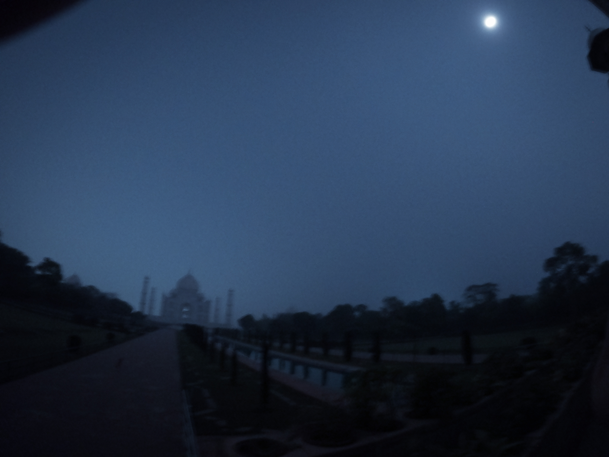

Real Story · 中文
我本来不是会追 tourist spot 的人。
在这 306 天的旅程里，我其实很少特别去追那些著名的 tourist spot。不是因为它们不美， 而是我更常被路上的人、边境、车子、村庄、修车厂、陌生人的家，或者某一个突发状况带走。
可是泰姬陵不一样。不是因为白天的泰姬陵，而是因为我知道了它有一个很特别的 full moon package。 满月前后几天开放，窗口很短，名额很少，而且付款还需要印度本地的 credit card 或 debit card。 对一个外国旅人来说，这几乎不是“买一张票”这么简单。
那时我人在 Kerala，一个陌生人的家里。就是在那里，人家的大儿子帮我解决了订票和付款的问题。 我们在 26/11/2023 买到了票。然后我就从 Kerala 开始往 Agra 冲。 少过七天的疯狂赶路，中间当然发生了很多事，那些以后再慢慢讲。
到了那一晚，真正进入 Taj Mahal 的时候，里面的电全部关掉。 没有普通游客那种热闹，没有手机光，没有闪光灯。我们只能站在指定区域， 在入口附近，看着远处的泰姬陵浸在满月的光里。
每一批人只有很短的时间。大家都很安静，没有人高声说话，最多只是低声耳语。 那种感觉很奇怪，好像所有人都知道：这三十分钟不是拿来消费的，是拿来收进记忆里的。
我拿着小小的 GoPro，在几乎没有光的黑暗里，努力把那一点点月光留下来。 后来我遇到一个印度本地家庭。他们花了不少钱进来，可是丈夫好像没有完全知道规则， 到了里面才发现不能用手机、不能用闪光灯。
他们看到我拿着 GoPro，很努力在拍，就请我帮他们拍一张 family photo。 在黑暗里拍全家福，真的很难，几乎什么都看不到。 但我还是尽力帮他们拍了，后来也把照片 email 回去给他们。
很好笑，也很难忘。那一晚，我去看的是泰姬陵，可是留下来的不只是泰姬陵。 还有 Kerala 陌生人家里的帮忙，一路疯狂赶路的自己，满月下安静的人群， 以及一个在黑暗里被保存下来的印度家庭。
English Memory Summary
I was not the kind of traveller who chased tourist spots.
During my 306-day journey, I rarely planned my route around famous tourist attractions. But Taj Mahal had a special full moon viewing window, and that changed everything.
The ticket was difficult for an international traveller to obtain. The viewing window was short, the seats were limited, and payment required an Indian local card. I was in Kerala at a stranger’s house, and the elder son helped me settle the booking and payment. We bought the ticket on 26/11/2023.
Then I rushed from Kerala to Agra in less than seven days. Many things happened during that crazy drive, but those belong to another page.
That night, all the electricity inside the Taj Mahal area was turned off. There were no phone screens, no flash, and almost no voices. We stood inside the dedicated zone and watched Taj Mahal soaking in full moon light.
I held a small GoPro and tried to catch whatever the darkness allowed. A local Indian family then asked me to take their family photo in the dark, because they had not fully realised the camera restrictions. I tried my best, and later emailed the photo back to them.
For thirty minutes, Taj Mahal was not a tourist spot. It was moonlight, silence, and a crystal memory.
Heart Statement
那一晚，我不是在参观泰姬陵。
我是在看世界还没有开灯之前，月光怎样把一座建筑慢慢显影出来。
我也是在学习：有些记忆不是因为照片清楚才留下来。 有些记忆刚好相反，是因为太暗、太短、太安静，才永远留住。
That night, I was not just visiting Taj Mahal. I was watching the moon develop a memory out of darkness.